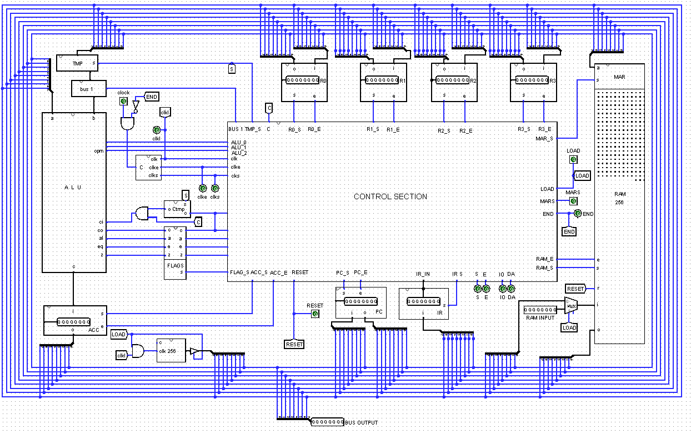
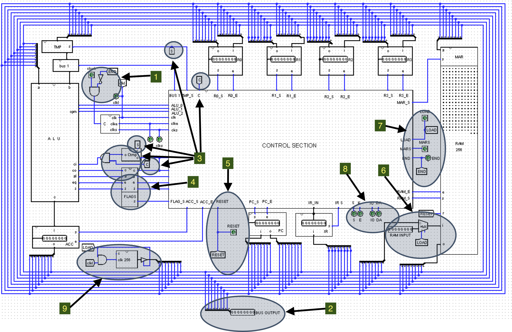

Final CPU Circuits: Required Modifications
This is the initial view of the **Final CPU Circuit** before detailed modifications for program loading and control are implemented.

The changes required to complete the overall circuit are highlighted in the image below. Each highlighted area corresponds to a detailed explanation provided in the links below.

Detailed Modification Requirements
NOTE: These numbered items correspond directly to the numbered highlights on the preceding diagram (8-bit CPU Diagram with Modification Highlights).
Detailed definitions of the necessary changes include:
- Circuits: Final CPU - Clock Input
- Circuits: Final CPU: BUS Output and PULL Down behavior
- Circuits: Final CPU: Carry In
- Circuits: Final CPU: FLAGS
- Circuits: Final CPU: RESET
- Circuits: Final CPU: RAM Input MUX
- Circuits: Final CPU: LOAD, MARS, END
- Circuits: Final CPU: IO CLK pins
- Circuits: Final CPU: Counter 256 Circuit